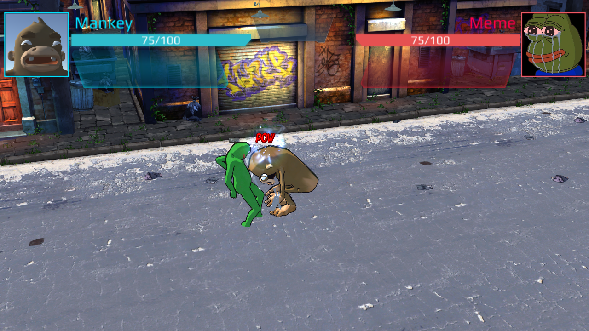
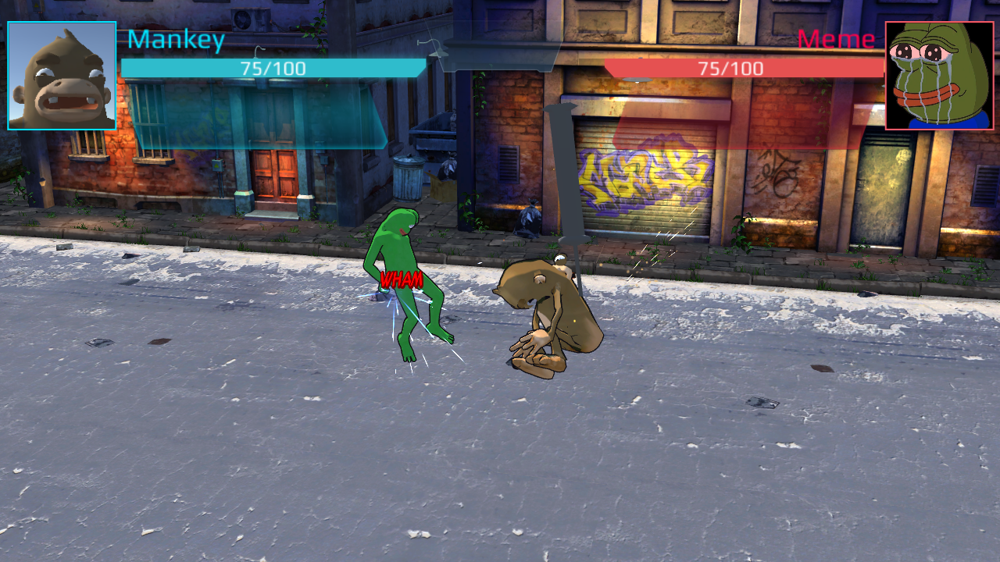
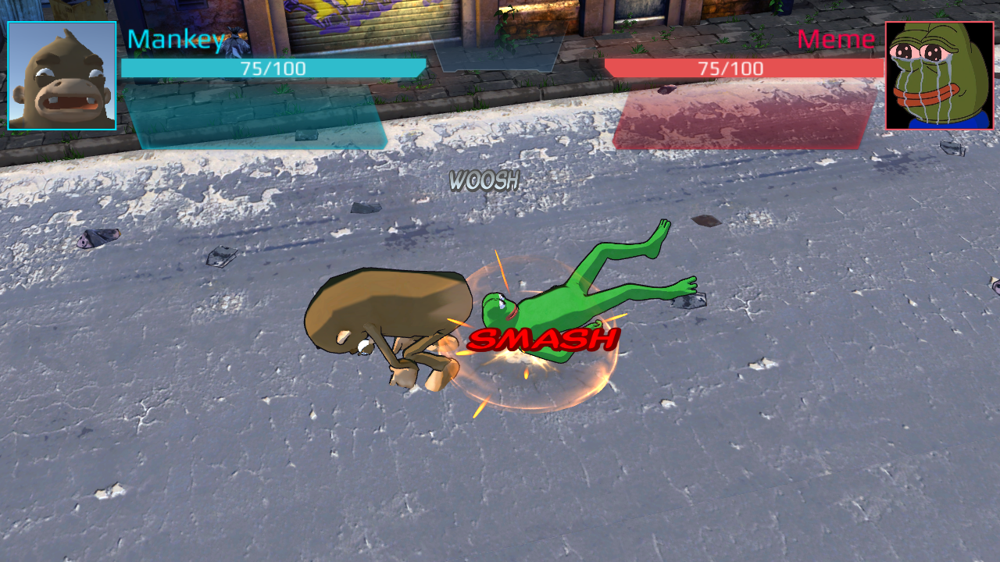
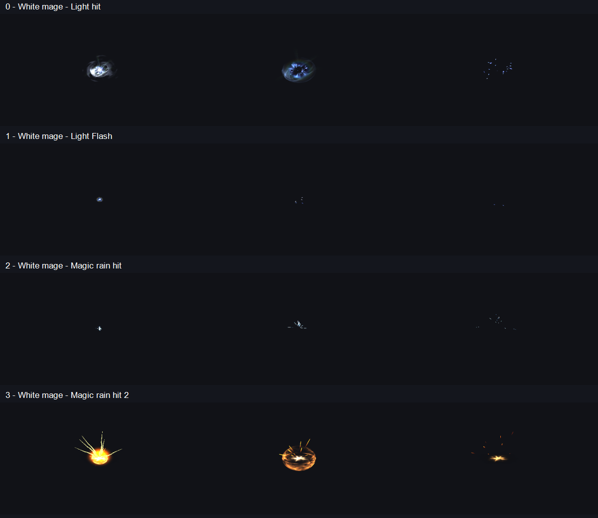
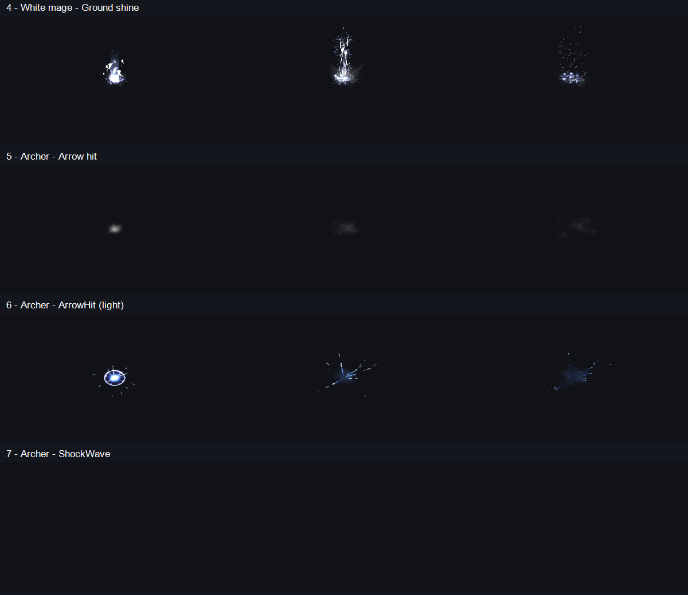
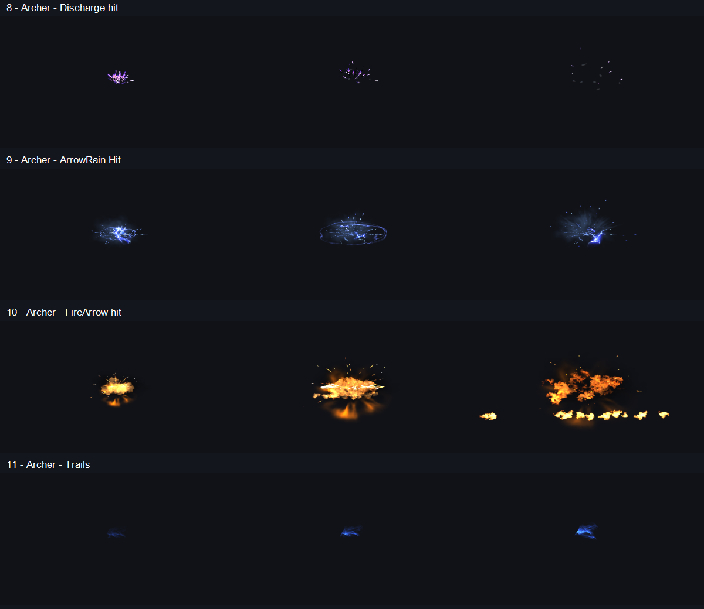

Đòn nhẹ: Light Hit · White Mage + POW. Đòn mạnh: ArrowHit · Archer + WHAM. Chạm đất: Magic Rain Hit 2 · White Mage + bụi và SMASH. Hiệu ứng dùng các mốc va chạm của animation hiện tại.






Lựa chọn · Kiểm tra timeline · Kiểm tra hình ảnh · Kiểm tra Play Mode